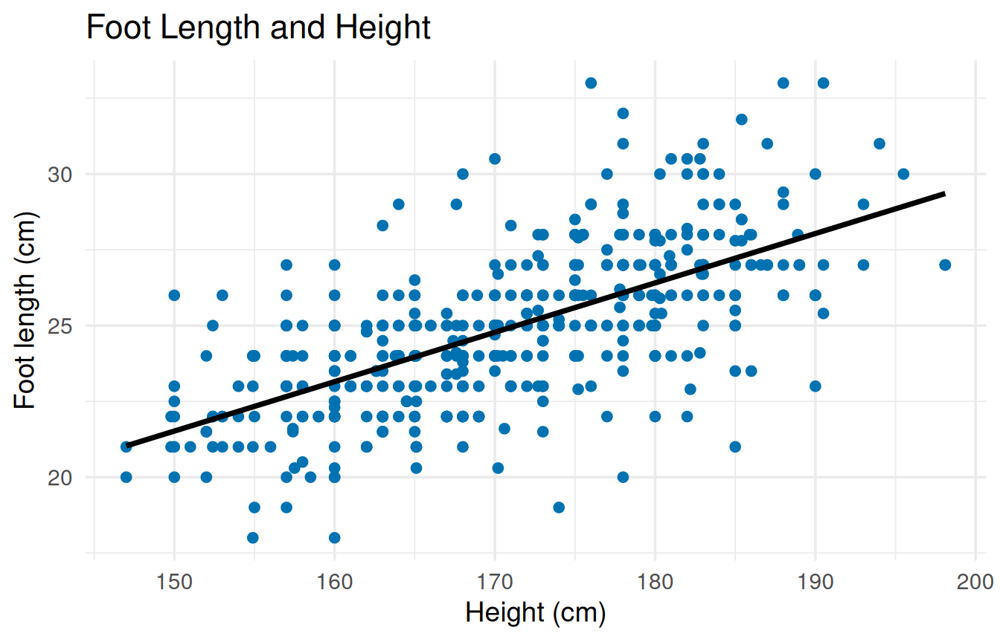
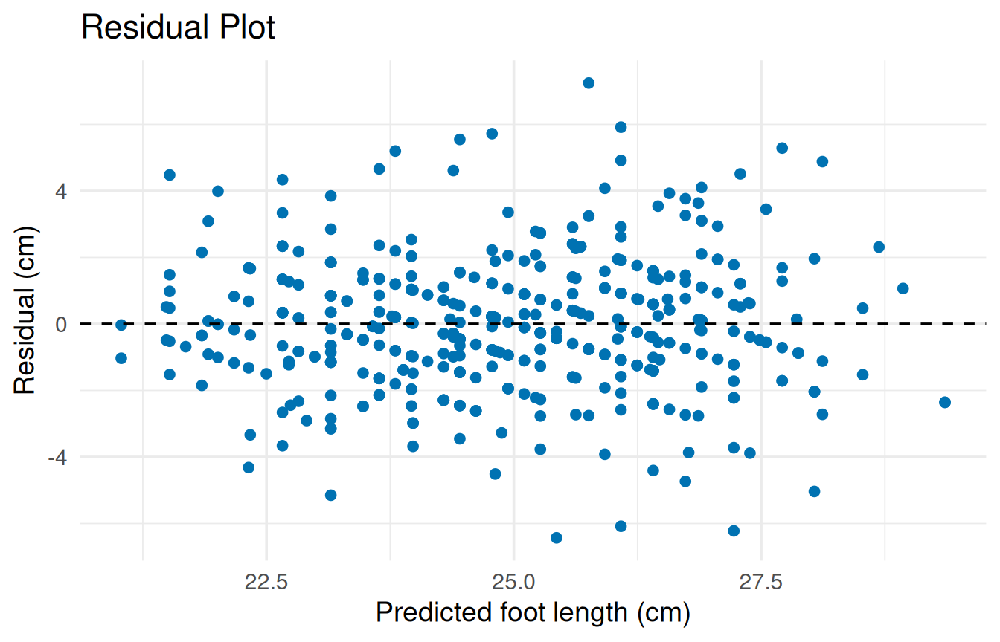
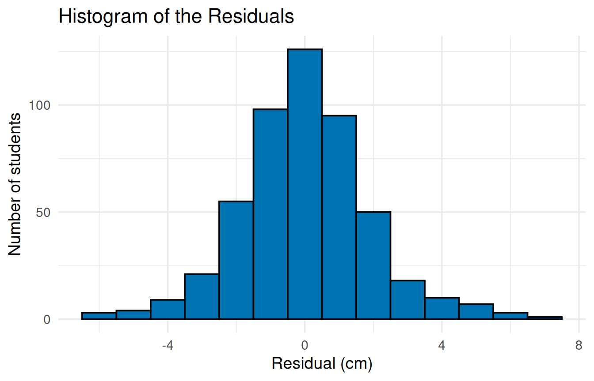
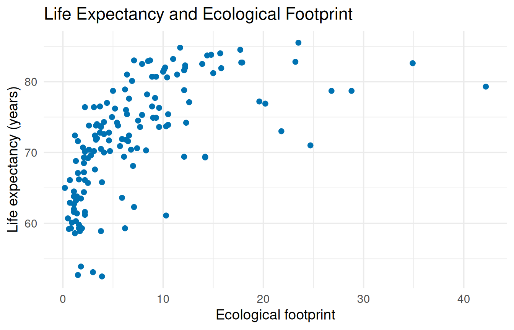
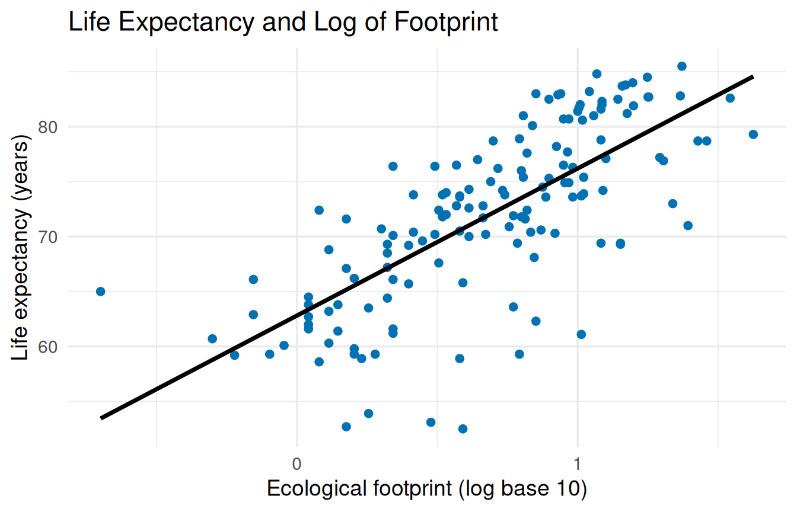

library(ggplot2)4 Correlation and Simple Linear Regression
This chapter follows the four-step modeling process from Chapter 4 of the textbook: measure the correlation, fit a regression line, check the residuals, and use the model for intervals and predictions. It ends with a log transformation for a relationship that curves.
Get the script: Download the Chapter 4 script, chapter_04.R, and save it in the same folder as your data.
4.1 The data
This chapter uses two datasets. Download both into the same folder as the script:
- Download
census_at_school.csv, the high school survey from Chapter 1. - Download
happy_planet_index_2024.csv, measurements for 147 countries, the dataset from the textbook chapter.
The variables used in this chapter:
| Variable | Dataset | What it records |
|---|---|---|
Height |
census_at_school.csv |
The student’s height measured in centimeters. |
Foot |
census_at_school.csv |
The student’s foot length measured in centimeters. |
Footprint |
happy_planet_index_2024.csv |
Ecological footprint per capita. This measures the biological surface area required to support a country’s consumption and absorb its waste. |
LifeExpectancy |
happy_planet_index_2024.csv |
The average life expectancy of a resident in years. |
4.2 Load the package and the data
# CHANGE THIS: the file name of your dataset, inside the quotes.
students <- read.csv("census_at_school.csv")4.3 Correlation
cor.test() calculates the linear correlation \(r\) between two numerical variables and tests whether the population correlation \(\rho\) is different from 0.
# 1. CORRELATION: cor.test() calculates r for two numerical
# variables and tests whether the population correlation (rho)
# is different from 0. The order of the two variables does not
# matter.
# CHANGE THIS: your two numerical variables
cor.test(students$Height, students$Foot)
Pearson's product-moment correlation
data: students$Height and students$Foot
t = 19.416, df = 498, p-value < 2.2e-16
alternative hypothesis: true correlation is not equal to 0
95 percent confidence interval:
0.6034251 0.7035770
sample estimates:
cor
0.6563834 The output has the same layout as a t-test:
- The correlation \(r\) is the number under
corat the bottom: 0.66, a large positive relationship between height and foot length by the usual social science guidelines (0.50 or higher is large). - The p-value is on the
t =line. Here it is below .001 (see Reading p-value < 2.2e-16 in Chapter 3), so you reject \(H_0: \rho = 0\). - The 95% confidence interval for \(\rho\) is under
95 percent confidence interval: [0.60, 0.70].
TipWith your own data
Change the two variables. Draw their scatterplot first (Chapter 1) to check that the relationship looks like a straight line, because \(r\) only measures straight-line relationships. Blank cells are left out automatically.
4.4 Fit the regression line
lm() (short for “linear model”) fits the regression line. Store the model under a name so you can use it in the steps that follow, then print it with summary():
# 2. REGRESSION MODEL: lm() stands for "linear model".
# Foot ~ Height reads "Foot, predicted by Height". The response
# (y) goes before the ~ and the predictor (x) after it.
# The model is stored under the name foot_model, so you can
# use it in the steps below.
# summary() prints the results.
# CHANGE THIS: your response variable, your predictor, your
# dataset, and a name for your model
foot_model <- lm(Foot ~ Height, data = students)
summary(foot_model)
Call:
lm(formula = Foot ~ Height, data = students)
Residuals:
Min 1Q Median 3Q Max
-6.4309 -1.1085 -0.0096 1.0860 7.2433
Coefficients:
Estimate Std. Error t value Pr(>|t|)
(Intercept) -2.917007 1.437412 -2.029 0.043 *
Height 0.162919 0.008391 19.416 <2e-16 ***
---
Signif. codes: 0 '***' 0.001 '**' 0.01 '*' 0.05 '.' 0.1 ' ' 1
Residual standard error: 1.909 on 498 degrees of freedom
Multiple R-squared: 0.4308, Adjusted R-squared: 0.4297
F-statistic: 377 on 1 and 498 DF, p-value: < 2.2e-16The ~ works the same way as in Chapter 3. Put the response (\(y\)) before it and the predictor (\(x\)) after it: Foot ~ Height reads “Foot, predicted by Height.”
The summary is long. Here is where to find what you need:
| What you need | Where it is in the output | In this example |
|---|---|---|
| Intercept | (Intercept) row, Estimate column |
\(-2.92\) |
| Slope | the predictor’s row (Height), Estimate column |
0.163 |
| p-value for the slope | the predictor’s row, last column, Pr(>|t|) |
below .001 |
| \(R^2\) | Multiple R-squared near the bottom |
0.4308, or 43.1% |
So the regression equation is: predicted foot length \(= -2.92 + 0.163 \times\) height. Each extra centimeter of height goes with a foot about 0.16 cm longer, and height explains 43.1% of the variation in foot length.
NoteThe stars and the scientific notation
The stars after each p-value (***) are R’s shorthand for how small the p-value is; the Signif. codes line underneath is their key. You can ignore them and report the p-value itself. <2e-16 is the same very small number explained in Chapter 3; report it as p < .001.
TipWith your own data
Change the response, the predictor, the dataset, and the model’s name. Use the same model name in every step below.
4.5 Scatterplot with the regression line
geom_smooth(method = "lm") adds the fitted line to a scatterplot:
# 3. SCATTERPLOT WITH THE REGRESSION LINE.
# geom_smooth(method = "lm") adds the regression line.
# se = FALSE leaves out the gray band around the line.
# CHANGE THIS: your predictor after x =, your response after y =,
# and your labels
ggplot(students, aes(x = Height, y = Foot)) +
geom_point(color = "#0072B2") +
geom_smooth(method = "lm", se = FALSE, color = "black") +
labs(title = "Foot Length and Height",
x = "Height (cm)",
y = "Foot length (cm)") +
theme_minimal(base_size = 14)`geom_smooth()` using formula = 'y ~ x'
NoteMessage: geom_smooth() using formula = ‘y ~ x’
This message only confirms that the line is a straight-line regression of your y variable on your x variable. You can ignore it.
4.6 Check the residuals
A residual is the actual value minus the predicted value. Store both as new columns in the dataset, so you can plot them:
# 4. RESIDUALS: store each student's predicted value and residual
# (actual minus predicted) as two new columns in the dataset.
# fitted() gives the predicted values; resid() gives the
# residuals.
# CHANGE THIS: your dataset name before each $, and your model
# name inside fitted() and resid()
students$predicted <- fitted(foot_model)
students$residual <- resid(foot_model)The residual plot puts the predicted values across and the residuals up and down. Use it for the textbook’s linearity and equal variance checks:
# RESIDUAL PLOT: predicted values across, residuals up and down.
# geom_hline(yintercept = 0) draws a horizontal line at 0
# (no error). linetype = "dashed" makes it a dashed line.
ggplot(students, aes(x = predicted, y = residual)) +
geom_point(color = "#0072B2") +
geom_hline(yintercept = 0, linetype = "dashed") +
labs(title = "Residual Plot",
x = "Predicted foot length (cm)",
y = "Residual (cm)") +
theme_minimal(base_size = 14)
Here the dots form an even band around the dashed line: no curve, and no megaphone shape. The slanted stripes come from foot lengths recorded to the nearest half centimeter, not from a problem with the model.
For the normality check, draw a histogram of the residuals, the same way you drew histograms in Chapter 1:
# HISTOGRAM OF THE RESIDUALS, to check that they form a rough
# bell curve. This is the histogram from Chapter 1.
ggplot(students, aes(x = residual)) +
geom_histogram(binwidth = 1, fill = "#0072B2", color = "black") +
labs(title = "Histogram of the Residuals",
x = "Residual (cm)",
y = "Number of students") +
theme_minimal(base_size = 14)
The residuals form a rough bell curve centered at 0, which passes the check.
WarningCommon error: replacement has fewer rows than data
If your response or predictor has blank cells, lm() leaves those rows out, so the model has fewer residuals than the dataset has rows, and storing them as a new column stops with an error like this one (shown with Armspan, which has 34 blank cells):
armspan_model <- lm(Armspan ~ Height, data = students)
students$arm_residual <- resid(armspan_model)Error in `$<-.data.frame`:
! replacement has 466 rows, data has 500How to fix it: add na.action = na.exclude inside lm(). The model is the same, but fitted() and resid() then put a blank in each row that was left out, so the columns line up:
armspan_model <- lm(Armspan ~ Height, data = students,
na.action = na.exclude)
students$arm_residual <- resid(armspan_model)
TipWith your own data
Change the dataset name before each $ and the model name inside fitted() and resid(), then the labels on both graphs. In the histogram, choose a binwidth that suits your residuals’ units.
4.7 Influential points: Cook’s distance
Cook’s distance measures how much each point moves the regression line. A common rule of thumb treats a value above 1 as highly influential.
# 5. COOK'S DISTANCE: one value for each row.
# max() shows the largest one.
# which(... > 1) lists the rows above 1, the common cutoff.
# CHANGE THIS: your model name inside cooks.distance()
cooks <- cooks.distance(foot_model)
max(cooks)[1] 0.03182956which(cooks > 1)named integer(0)The largest Cook’s distance is 0.03, far below 1. named integer(0) means no rows are above 1, so no single student is pulling the line.
TipWith your own data
Change the model name. If which() lists rows, the numbers are row numbers in your dataset. To see those rows, put the numbers in square brackets, for example students[c(12, 40), ].
4.8 Confidence interval for the slope
# 6. 95% CONFIDENCE INTERVAL for the intercept and the slope.
# CHANGE THIS: your model name
confint(foot_model) 2.5 % 97.5 %
(Intercept) -5.7411458 -0.09286786
Height 0.1464325 0.17940499Read the slope’s row (Height): we are 95% confident that, in the population, each extra centimeter of height goes with a foot between 0.146 and 0.179 centimeters longer, on average. The columns 2.5 % and 97.5 % are the two ends of a 95% interval.
4.9 Predictions
To predict from the model, set up the predictor value in a small dataset, then ask predict() for one of the two intervals the textbook describes:
# 7. PREDICTION for a new predictor value.
# data.frame(Height = 170) sets up the value to predict from.
# The name (Height) must match the predictor in the model.
# interval = "confidence" gives the interval for the MEAN of
# everyone with that height.
# interval = "prediction" gives the interval for ONE person.
# CHANGE THIS: your predictor's name and the value you want, and
# your model name
new_student <- data.frame(Height = 170)
predict(foot_model, new_student, interval = "confidence") fit lwr upr
1 24.77918 24.61066 24.94771predict(foot_model, new_student, interval = "prediction") fit lwr upr
1 24.77918 21.0252 28.53317For students 170 cm tall, the predicted foot length is 24.78 cm (fit). The confidence interval for the mean foot length of all such students is [24.61, 24.95]. The prediction interval for one such student is much wider, [21.03, 28.53], because individuals vary more than averages do. lwr and upr are the lower and upper ends.
WarningCommon error: object ‘Height’ not found
What you see
new_student <- data.frame(height = 170)
predict(foot_model, new_student, interval = "confidence")Error:
! object 'Height' not foundWhat it means: the name inside data.frame() has to match the predictor’s name in the model exactly. Here it is height instead of Height.
How to fix it: copy the predictor’s name from your lm() line.
TipWith your own data
Change the predictor’s name and value inside data.frame(), and the model name. Predict only within the range of predictor values in your data; the textbook explains why predictions outside that range are risky.
4.10 Log transformation
When a scatterplot curves, a log transformation of the predictor can straighten it. Load the second dataset and draw the original scatterplot:
# 8. LOG TRANSFORMATION, with a second dataset.
# CHANGE THIS: the file name of your dataset, inside the quotes.
planet <- read.csv("happy_planet_index_2024.csv")# First, the scatterplot on the original scale.
ggplot(planet, aes(x = Footprint, y = LifeExpectancy)) +
geom_point(color = "#0072B2") +
labs(title = "Life Expectancy and Ecological Footprint",
x = "Ecological footprint",
y = "Life expectancy (years)") +
theme_minimal(base_size = 14)
The dots climb steeply and then level off, a curve of diminishing returns. Plot the base-10 log of the predictor instead by putting log10() around it:
# log10() takes the base-10 logarithm of each value. Putting it
# inside aes() plots the transformed values; the data stay as
# they are.
# CHANGE THIS: your predictor inside log10(), and your response
ggplot(planet, aes(x = log10(Footprint), y = LifeExpectancy)) +
geom_point(color = "#0072B2") +
geom_smooth(method = "lm", se = FALSE, color = "black") +
labs(title = "Life Expectancy and Log of Footprint",
x = "Ecological footprint (log base 10)",
y = "Life expectancy (years)") +
theme_minimal(base_size = 14)`geom_smooth()` using formula = 'y ~ x'
The curve is gone. Fit the model the same way, with log10() around the predictor:
# The model works the same way, with log10() around the predictor.
# CHANGE THIS: your response, your predictor inside log10(), and
# your dataset
log_model <- lm(LifeExpectancy ~ log10(Footprint), data = planet)
summary(log_model)
Call:
lm(formula = LifeExpectancy ~ log10(Footprint), data = planet)
Residuals:
Min 1Q Median 3Q Max
-18.2244 -2.6984 0.8109 4.0421 11.5524
Coefficients:
Estimate Std. Error t value Pr(>|t|)
(Intercept) 62.8086 0.8537 73.58 <2e-16 ***
log10(Footprint) 13.3925 1.0579 12.66 <2e-16 ***
---
Signif. codes: 0 '***' 0.001 '**' 0.01 '*' 0.05 '.' 0.1 ' ' 1
Residual standard error: 5.481 on 145 degrees of freedom
Multiple R-squared: 0.525, Adjusted R-squared: 0.5217
F-statistic: 160.3 on 1 and 145 DF, p-value: < 2.2e-16\(R^2\) is 0.525, or 52.5%, compared with 35.6% for a straight line on the original scale (the square of their correlation, 0.60). The slope, 13.39, is read as the textbook describes for a base-10 log: each time a country’s footprint multiplies by 10, predicted life expectancy rises by about 13.4 years.
WarningCommon error: NaNs produced
What you see
log10(c(10, 1, 0, -5))Warning: NaNs produced[1] 1 0 -Inf NaNWhat it means: the logarithm only exists for numbers above 0. log10(0) is -Inf (minus infinity) and the log of a negative number is NaN (“not a number”), so lm() cannot use those rows.
How to fix it: a log transformation only works for a predictor whose values are all above 0. If yours includes 0 or negative values, the textbook’s log transformation is not the right tool for that variable.
TipWith your own data
Put your predictor inside log10() in both the scatterplot and the model, and change the response and dataset. Interpret the slope as the change in the response each time the predictor multiplies by 10.